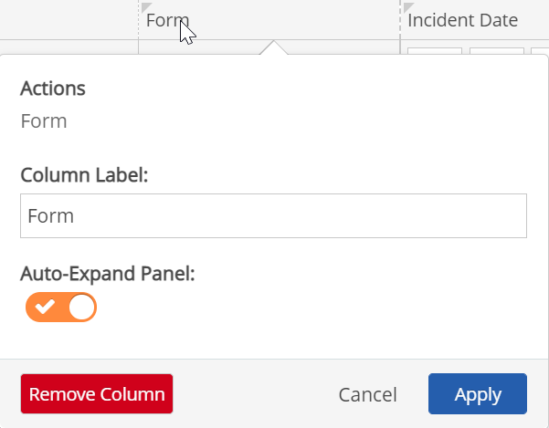
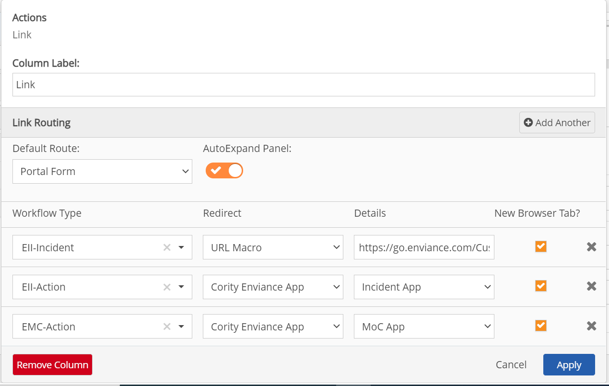
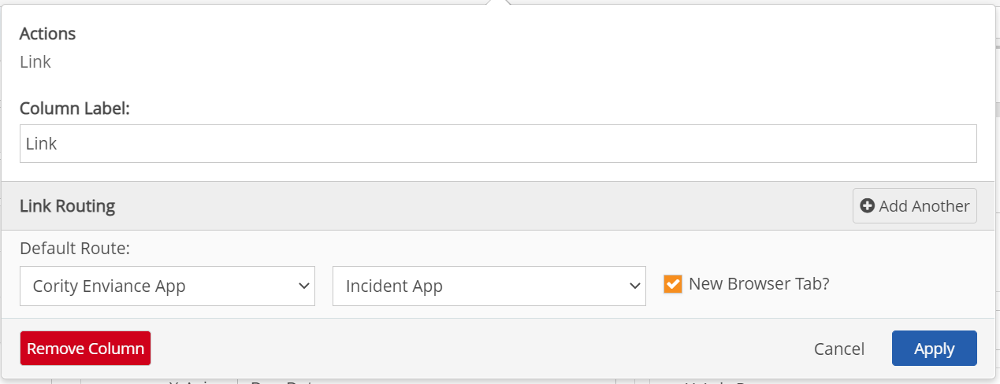

Portal panels may contain links from table mode that enable users to access a form to view or edit data for workflows, events and tasks. Two types of links are available:
Form: Opens the form in the portal. The Form link is added by default when you create a Workflow, Event or Task Panel.
In a Task Panel, for tasks associated with multiple requirements, the only completion mode available in the Portal completion form is the group mode. If you need to have users complete tasks for different requirements individually, use the Management System link instead.
Platform Link: For Tasks or Event panels, this link may be made available to open the task or event completion form in the Management System. Requires access permissions for the Management System, including access to any associated objects.
Link (configurable: Same as Platform Link in other panels, but in a Workflow Panel the Link field includes different configuration options, and allows multiple configurations for panels that include different types of records (for example, findings from both inspections and audits). Configuration options are:
The Link column can be added to the Workflow panel and configured for the link types you need. For custom apps, you may need to request configuration of links from Cority Customer Support.
Edit Task Link: Can be used for easy access to the task settings for management purposes. The link will open the Task Edit page in the Management System in a new browser tab, if the user has task edit permissions.
To add or edit the Form link:
Expand the Actions in the Field Selector panel.
Drag and drop the Form option onto the page in the desired column position. (Clicking the plus sign adds it as the last column in the panel, then you can drag and drop it to the desired position.)

Click the Form column head to open the column settings dialog.
Column Label: Column header text. You may edit the column label as desired.
Auto-Expand Pane: Controls display behavior of the form. By default when the user clicks the Form link, the Form will automatically expand to the full page. If you would prefer to have it appear in a reduced size on the page in the space occupied by the panel (similar to a pop-up dialog), you can turn auto-expand off.

To add a Platform Link (to the Management System) to a form:
From the Field Selector, drag and drop the Platform Link option from the Actions section in the Field Selector pane onto the page in the desired column position. (Clicking the plus sign adds it as the last column in the panel. You can then drag and drop it to the desired position.)
For Workflows, the field name is "Link".
Click the column head to open the column settings dialog.
Column Label: Column header text. You may edit the column label as desired.
For Workflows, this is the default option for Link Type.
To configure different link options for a Workflow Panel:
From the Field Selector, drag and drop the Link option from the Actions section onto the page in the desired column position. (Clicking the plus sign adds it as the last column in the panel.)
Click the column head to open the column settings dialog.
Column Label: Column header text. You may edit the column label as desired.
For the Default Route, choose the type of link to use as the default option.
Platform (default): Link to workflow form in the Management System. (Requires user permissions to the Management System.)
Portal Form: Opens the workflow current step form in the Portal (same as the Form link button). (See Auto-Expand option above.)
EMS App: Use this to access one of the standard Apps, including AuditApp, IncidentApp, InspectionApp, MOCApp. The links are pre-configured with the appropriate variables for the app, as noted below.
URL macro: Use macros to construct a link. See supported macros and examples below. You may also enter a full URL link to another resource.
If the workflow panel includes multiple workflow types (such as corrective actions from different Apps), click Add if you want a different option than the default for a record type. Choose the workflow type to which the link applies from the dropdown list.
You can add a link type for each workflow type that is included in the panel. If no workflow-specific link is configured, the Default Link will be used. See example below.

When a user clicks the link button in the table, the system will use the link form for that record's workflow type. If none is configured, it will use the default route.
The pre-configured links to the standard Apps are for convenience. (The identical links may be set up as URL macro links.)

Incident App: Goes to current step of the Incident workflow, using this link construct:
{url::basepath}IncidentApp/?hash=/search/{flow::unique id}/{step::name}
InspectionApp: Goes to relevant inspection at current stage, using this link construct:
{url::basepath}InspectionApp/?#inspection?{flow::id}
MOCApp: Goes to current step of the MOC workflow, using this link construct:
{url::basepath}MoCApp/?hash=/search/{flow::unique id}/{step::name}
AuditApp: Goes to the AuditApp
{url::basePath}AuditApp/
You can construct various custom links using the URL macro link type. To create a link to a custom app, you will need to use the URL macro link type.
You can enter a full URL, or use the available macros to construct a link.
The macros that are available to be used in the URL macro link type are:
{url::basePath} - resolves to https://go-enviance.com/goto/{system::id}/
{step::name} - interpreted as current step
{flow::unique id}
{flow::parent id}
{flow::grandparent id}
Example: To construct a link to go for corrective actions for an Inspection, you would need to use the "grandparent id" since a corrective action workflow (EIA-Corrective Action) is the grandchild of an inspection workflow (EIA-Inspection). The URL macro link is thus: {url::basepath}InspectionApp/?#inspection?{flow::grandparent id}